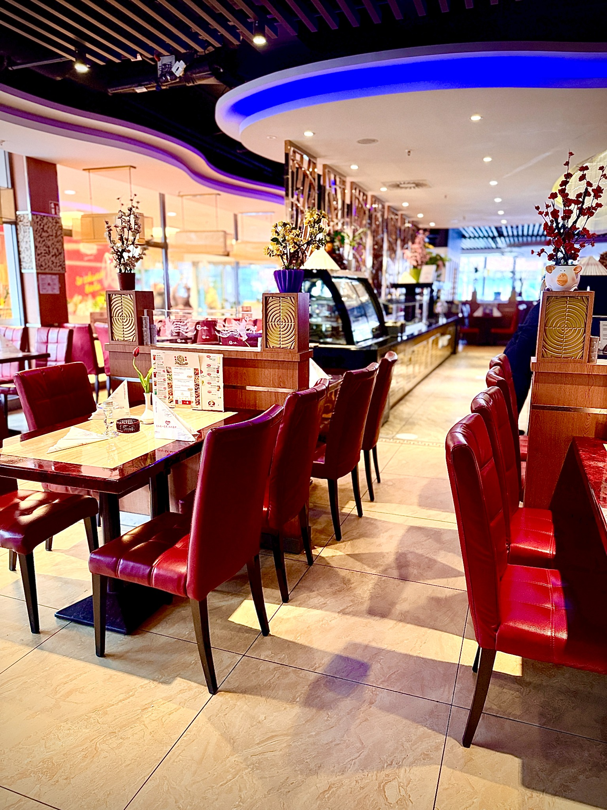
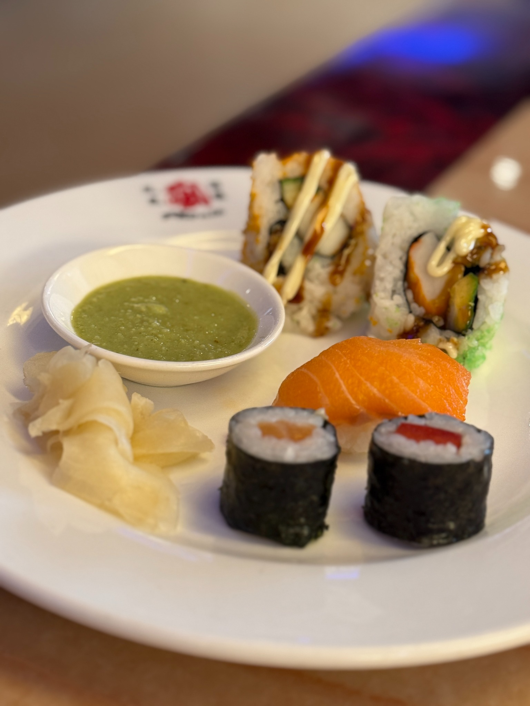
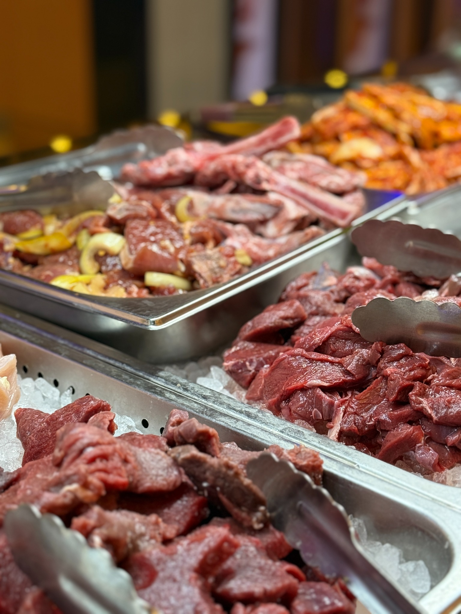
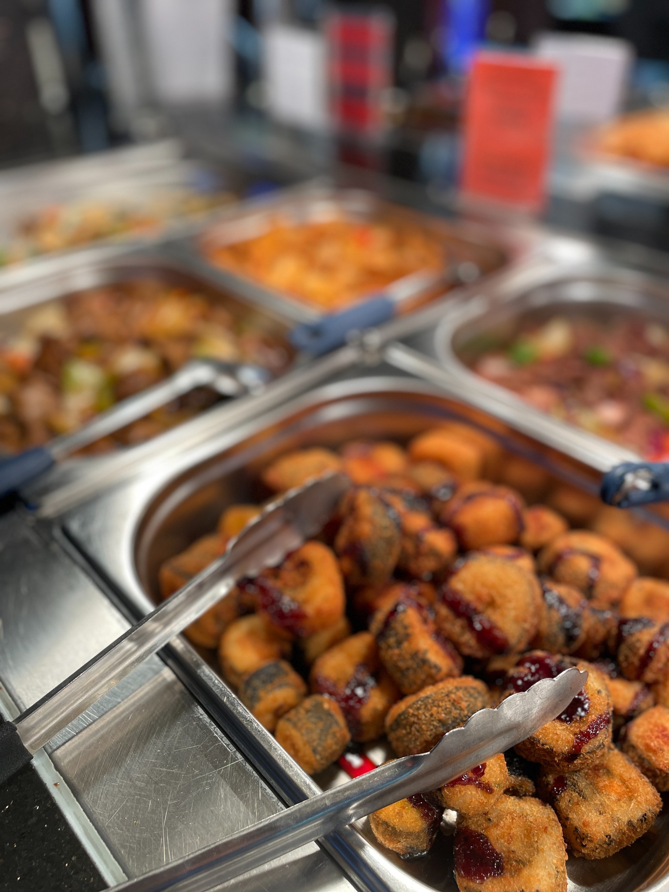
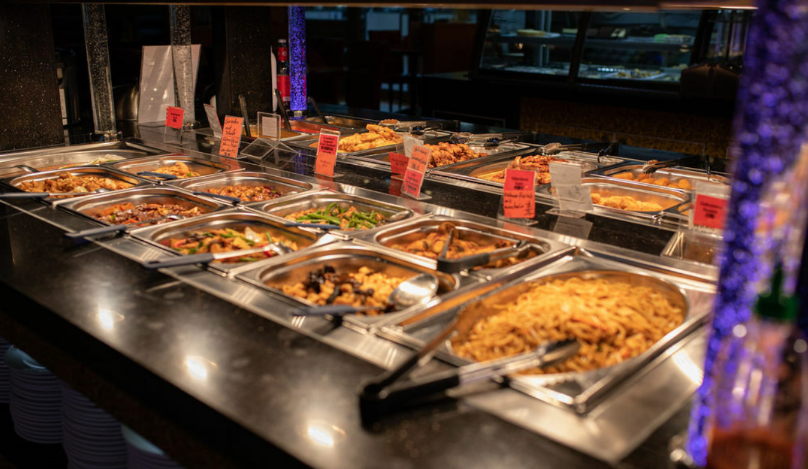

Mittagsbuffet
15,90€
Mo.–Fr. 12:00 – 16:00 Uhr
ohne Live Grill · außer Feiertage
ohne Live Grill · außer Feiertage
- Suppen & Vorspeisen
- Fleisch, Fisch & Gemüse
- Sushi & Salat
- Desserts & Eis
Asiatische Vielfalt, frisch zubereitet und so abwechslungsreich, wie ein Besuch mit Familie und Freunden sein sollte. Entdecken Sie das Phönix in der Greifswalder Straße.
Vom klassischen warmen Buffet über frisches Sushi bis zum individuell zusammengestellten Teppanyaki-Teller: Bei uns entdecken Sie asiatische Küche auf Ihre Weise.
Klare Zeiten, klare Preise. Schlemmen Sie beim Buffet so oft und so viel Sie möchten. Feiertage können abweichende Buffetzeiten haben.
Sie entscheiden, was auf den Teller kommt. Unsere Köche übernehmen den Rest – frisch, heiß und direkt vor Ihren Augen.
Die Klammer mit Ihrer Tischnummer begleitet Sie zum Live-Grill-Buffet.
Stellen Sie Ihren Wunschteller aus Fleisch, Fisch, Meeresfrüchten und Gemüse zusammen.
Markieren Sie den Teller mit Ihrer Tischnummer und ergänzen Sie Ihre gewünschte Sauce.
Unsere Köche bereiten alles auf der Teppanyaki-Platte zu und servieren Ihr Gericht heiß.
Symbolbild · KI-generiert
Ob Mittagessen, Familienessen oder Abend mit Freunden – bei uns stehen Auswahl, Frische und gemeinsames Genießen im Mittelpunkt.





Reservierungen nehmen wir aktuell ausschließlich telefonisch entgegen. Rufen Sie uns an – wir freuen uns auf Ihren Besuch.
Sie finden uns in der Greifswalder Straße 90 in 10409 Berlin. Täglich geöffnet – für Mittagessen, Abendbuffet und Live Grill.
10409 Berlin
030 467 93 187